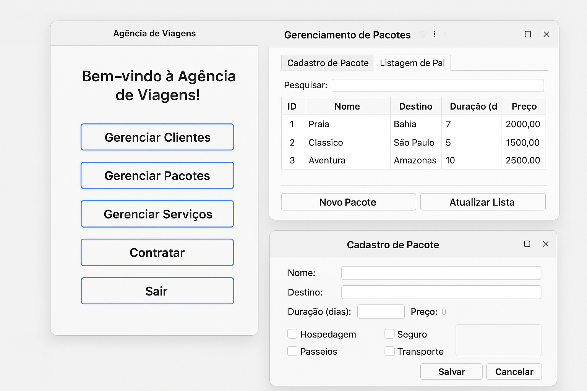

Gerenciamento de Estoque
Aplicação com formulários e relatórios — protótipo de desktop
Introdução
Projeto acadêmico focado em modelagem de dados e interfaces para operações CRUD sobre produtos e entradas/saídas de estoque.
Arquitetura
Soluções propostas: Backend leve (Node/Express ou Java) + banco relacional (SQLite para dev ou Postgres em produção). A interface é feita com HTML/CSS tradicionais.
Mockups
Próximos passos
Adicionar autenticação, histórico de movimentações e exportação de relatórios em CSV/PDF.